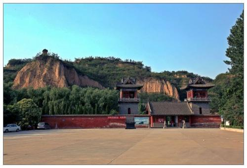

首页 >> 历史文化
更新时间：2019-04-20 15:35:46
 开凿于北魏的石窟寺距今已有1400多年的历史，现存洞窟5个，千佛龛一个，小佛龛255个，摩崖大佛3尊，佛像7743个，碑刻题记200余块。其中的《帝后礼佛图》是我国现存的唯一石刻图雕（另一处位于龙门石窟的已不存在），具有极高的研究和欣赏价值。
石窟寺背山面水，环境幽雅，风光秀丽，被称为“溪雾岩云”的圣地，“石窟晚钟”为巩县八景之一，1982年国务院将石窟寺列为全国重点文物保护单位，是国家AAA级景区。
据唐龙朔二年(662)《后魏孝文帝故希玄寺之碑》记载，北魏孝文帝在此创建伽蓝。明弘治七年(1494)重修碑载：“自后魏宣武帝景明之间，凿石为窟，刻佛千万像，世无能烛其数者。”嗣后东西魏、北齐、隋、唐、北宋，相继于此造窟凿像。现存石窟前的木构建筑为清同治年间所修。寺南临洛水，背依大力山。山的上部为厚4.50米的黄土层,下为岩石层,露出地面的部分厚20米。石窟群就开凿在岩石层上。现有主要洞窟 5个，千佛龛1个，摩崖造像3尊及历代造像龛328个。总计大小造像7743尊，造像题记及其他铭刻186则。造像题记包括北魏3则、东西魏10则、北齐29则、北周2则、唐代85则、宋代2则、时代不详的30则。
中华人民共和国建立前，石窟寺各窟被盗严重。第 3、4、5窟及千佛龛被泥砂淤埋三分之二以上。1954年清理了各窟内的淤土，新建了石窟寺保护房。1973年以后，国家多次拨款对石窟寺进行了全面化学合剂技术粘接、勾缝、修补。另外还修建了大型排水沟，扩建围墙和其他建筑。1954年起由石窟寺小学负责保护。1987年建立巩县石窟寺文物保管所。